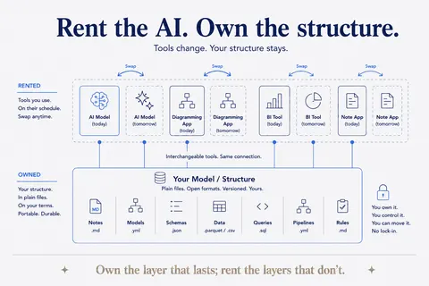
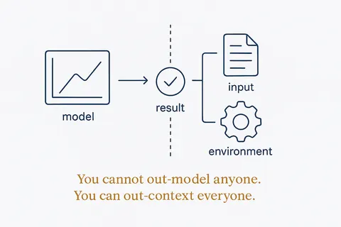
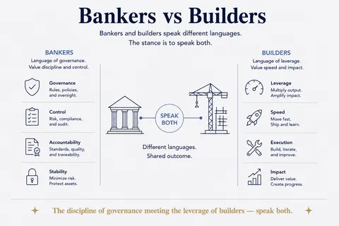

Build, buy or rent
When to keep the package, when to copy the function, and which layer you should own yourself. 5 concepts; each opens its full page in its own library.
 Own the Layer or Rent the FeatureEvery knowledge product answers two questions: who maintains it, and is it a layer of its own or a feature of something else. The answers decide what you can build on.Structure Beats Magic →
Own the Layer or Rent the FeatureEvery knowledge product answers two questions: who maintains it, and is it a layer of its own or a feature of something else. The answers decide what you can build on.Structure Beats Magic →
Rent the AI; Own the StructureModels are swappable commodities; your structure is the durable asset.Structure Beats Magic →
The Model Is the Easy PartEveryone can rent the same model. What surrounds it — context, rules, memory, verification — is the only part that can be yours.Structure Beats Magic →
Bankers vs BuildersThe discipline of governance meeting the leverage of builders — speak both.Structure Beats Magic → Do Not Reinvent the WheelThe new way of modeling stands on the shoulders of giants — distil the essentials from decades of data-modeling work and keep what works, rather than starting from scratch.Breakthrough Modeling →
Do Not Reinvent the WheelThe new way of modeling stands on the shoulders of giants — distil the essentials from decades of data-modeling work and keep what works, rather than starting from scratch.Breakthrough Modeling →The neighbourhood
How this connects
Everything on this topic → (use cases, articles, resources)
Other categories: Design thinking and small experiments · From proof of concept to something you rely on · Vibe coding practices that hold · Data, rules and structure first · Privacy and control · Building your own data models · Components and building blocks · The business OS